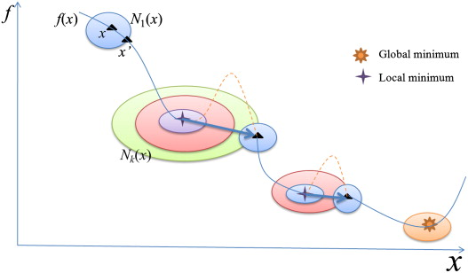

Variable Neighborhood Search
für das
Partition Graph Coloring Problem
Lorenz Leutgeb und Moritz Wanzenböck
betreut durch
Dipl.-Ing. Dr.techn. Martin Gruber
Kooperation
- Impuls
- Regelmäßiger Austausch
- ComputeGrid
Wissenschaftlicher Hintergrund
- Li, Simha: The Partition Coloring Problem and its Application to Wavelength
- Noronha, Ribeiro: Routing and wavelength assignment by partition colouring
Problem
Zuweisen von Wellenlängen in Glasfasernetzen
Anwendungsgebiet
Design und Optimierung von Glasfasernetzwerken
Funktionsweise
- Berechnen einer Initiallösung mit onestepCD
- Variable Neighborhood Search
- Variable Neighborhood Descent
- Lokale Optimierung
- Shaking
Nachbarschaften
ChangeColor
- Einfach & Schnell
- Färbe Knoten mit maximaler Farbe um
- Versuche neue Lösung zu finden
ChangeNode
- Wie ChangeColor
- Tausche Knoten mit maximaler Farbe aus
- Versuche neue Lösung zu finden
DSATUR
- Greedy
- Maximale Saturation
- Maximale Zahl an nicht eingefärbten Nachbarn
ChangeAll
- Kombination aus ChangeNode & ChangeColor
- Tausche Knoten und Farbe
- Aufwendig, aber gute Ergebnisse
Was ist unser Ziel?
- Bessere Ergebnisse
- Standardisierte Probleminstanzen
Verwendete Software

UBIGRAPH